Quick Start
Electron là gì?
Electron là 1 framework cho phép chúng ta xây dựng 1 ứng dụng desktop đa nền tảng bằng công nghệ web như HTML, CSS và Javascript. Electron kết hợp giữa chromium và node.js trong một runtime. Chính vì thế, các ứng dụng có thể chạy trên Mac, Windows và Linux.
Chromium là gì?
Chromium là dự án trình duyệt web mã nguồn mở và là nền tảng cho Google Chrome. Do hoàn toàn là mã nguồn mở nên Chromium có sẵn trên kho phần mềm Linux để dễ dàng cài đặt hơn. Ngoài ra trình duyệt Chromium cũng có sẵn trên các nền tảng khác. Bạn có thể chạy Chromium trên Windows hoặc Mac
Lợi ích của việc sử dụng công nghệ web
Có thể chạy trên nhiều nền tảng khác nhau mà chỉ sử dụng 1 source code, không cần phải phát triển 1 native code riêng cho từng hệ điều hành, chi phi phát triển sẽ thấp hơn, không tốn thời gian cho việc phát triển, bảo trì và nâng cấp.
Sử dụng ngôn ngữ lập trình thông dụng là HTML và JS Không giới hạn môi trường lập trình, lập trình viên có thể làm việc trên hầu hết các hệ điều hành
Vì sao kết hợp với ứng dụng desktop?
Có thể truy cập tới hệ thống tập tin của người dùng
Có thể sử dụng mọi lúc không cần phải kết nối mạng
Thông tin và dữ liệu của người dùng sẽ không bị đánh cắp
Tốc độ có thể sẽ nhanh hơn các ứng dụng web-based do 1 trang web cùng một lúc có thể có nhiều người truy cập, gây tắc nghẽn trong quá trình truyền các gói tin.
Cross-platform app
Là các phần mềm có thể được thực thi và vận hành trên nhiều nền tảng máy tính. Có thể chia thành 2 loại: một loại yêu cầu phải thiết kế hoặc biên dịch từng phiên bản cho mỗi nền tảng nó hỗ trợ; loại kia có thể chạy trực tiếp trên bất cứ nền tảng nào mà không cần cài thêm bất cứ thứ gì.
Các công nghệ thường dùng để xây dựng các ứng dụng desktop đa nền tảng là: Java, Adobe AIR, Electron, CEF,…
Vì sao lại chọn Electron?
Chúng ta thử sử dụng phép so sánh giữa 1 công nghệ lâu đời và công nghệ sử dụng JS khá mới mẻ này.
Java
- Java được sử dụng để phát triển các ứng dụng đa nền tảng lâu đời nhất. Trái ngược với các nền tảng khác, Java bản chất là một ngôn ngữ lập trình. Các nền tảng còn lại đều được tạo ra với sự hỗ trợ của một ngôn ngữ lập trình khác.
- Lợi ích:
- Do là kẻ tiên phong nên nó được sử dụng bởi một cộng đồng khổng lồ, do vậy cho ra đời rất rất nhiều các thư viện giải quyết đa dạng các vấn đề từ lớn đến nhỏ. Nói Java là nền tảng mạnh về xử lý dữ liệu cũng không ngoa.
- xử lý đa luồng rất tốt
- Bất lợi:
- Muốn sử dụng được ứng dụng phải cài đặt máy ảo của Java
- Giao diện không được thẩm mỹ cho lắm
- 1 source code không thể sử dụng ở các platform khác Nếu lưu lượng dữ liệu lớn và cần giải quyết vấn đề đa luồng, bạn có thể cân nhắc sử dụng Java.
Electron
- Đây là một trong những nền tảng mới nhất trong lĩnh vực phát triển các ứng dụng cross-platform. Như đã đề cập, Electron là một nền tảng tích hợp công nghệ web để xây dựng 1 ứng dụng desktop, vì thế nó giữ cả điểm mạnh lẫn điểm yếu của cả 2 loại ứng dụng này.
- Lợi ích:
- JS gần đây đang rất phát triển và được sử dụng rộng rãi
- HTML và CSS kết hợp sẽ tạo nên những giao diện tuyệt đẹp
- Các thư viện JS về web có thể được dùng để xây dựng ứng dụng desktop
- Source code có thể được sử dụng ở các nền tảng khác
- Có thể sử dụng mọi lúc mọi nơi, kể cả có internet hoặc không
- Bất lợi:
- vì JS khá mới mẻ đối với phát triển ứng dụng cross-platform, không có nhiều thư viện hỗ trợ việc xử lý dữ liệu nên nếu muốn xây dựng một ứng dụng đòi hỏi việc xử lý dữ liệu lớn và phức tạp, e rằng bạn phải tự viết các thư viện ấy.
- Ngoài ra, khi ứng dụng được truy cập online, việc bảo vệ thông tin cũng như source code cũng là một vấn đề mà bản thân electron vẫn chưa giải quyết được.
Tóm lại, Nếu ứng dụng của bạnkhông đòi hỏi các thuật toán và xử lý dữ liệu phức tạp, đây là một sự lựa chọn tuyệt vời.
Tìm hiểu sâu hơn về Electron
Nói một cách đơn giản, Electron cung cấp một runtime để xây dựng ứng dụng desktop và sử dụng thuần JS (điều này đã được nhắc ở phần trên). Nó giống như một app nodejs thông thường với file package.json, Electron lấy thông tin file main được thiết lập ở file này và thực thi nó. Sau đấy trong file này, các Window tương ứng với mỗi trang Web khác nhau được tạo ra.
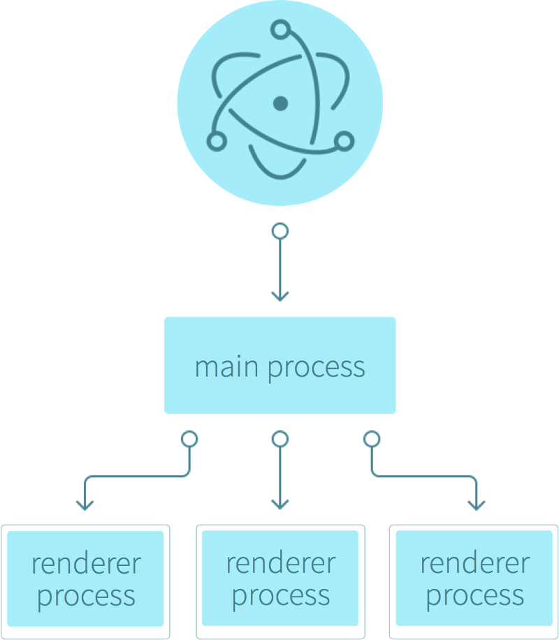Khi ta khởi tạo tiến trình chính (thực thi file main.js), về cơ bản là không một cửa sổ nào được tạo ra cả. Chỉ khi bạn tạo ra 1 BrowserWindow, khi ấy chương trình của bạn mới chính thức có giao diện. Mỗi 1 BrowserWindow chạy một tiến trình gọi là “renderer process”. Các renderer process này chịu trách nhiệm render các file html tương ứng lên window.
Tóm lại, tiến trình chính chịu trách nhiệm giao diện người dùng (các màn hình ứng dụng), các renderer process sẽ render nội dung của các file html lên giao diện tương ứng.
Câu hỏi đặt ra, các web pages này tương tác với tiến trình main như thế nào?
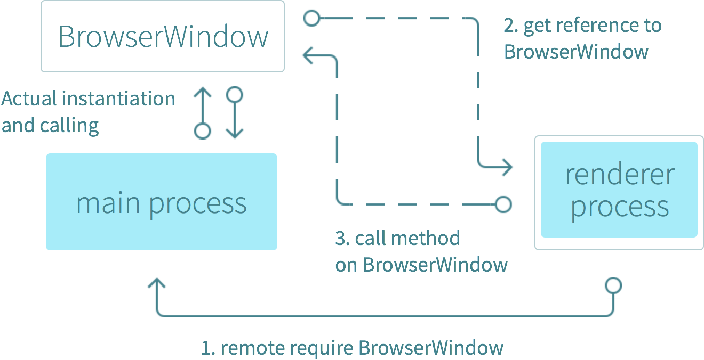Cơ chế IPC:
Ở chơ chế này, file main.js (chính là main process) hoạt động như một server đối với cách code web thông thường, và các renderer process sẽ là những file .js tương tự như các client. Các IPC được sử dụng để truyền thông tin giữa main.js và các file .js phía client thông qua các hàm như: (hàm này để lắng nghe các thông điệp từ một kênh nào đó
Ở tiến tình main, ipc được sử dụng là ipcMain, ta chỉ cần thêm phần khai báo như sau:
const {ipcMain} = require(‘electron’);
Ở các renderer process, ipc được sử dụng là ipcRenderer và được khai báo như sau:
const {ipcRenderer} = require(‘electron’);
Các renderer muốn trao đổi thông tin với nhau phải thông qua tiến trình main. Phần này tôi sẽ giải thích rõ hơn ở phần tạo ứng dụng.
Một số hàm dùng để trao đổi giữa main process và renderer process:
- Các hàm có ở cả main và renderer process:
-
on(channel, listener)
channel: String
listener = function(event, args…..)
Hàm này để lắng nghe các thông điệp từ một kênh nào đó, hàm callback truyền vào chính là hàm để xử lý thông điệp ấy với các tham số args là thông điệp và event là nơi gửi thông điệp.
-
once(channel, listener)
channel: String
listener = function(event, args…..)
Hàm này cũng dùng để lắng nghe thông điệp nhưng chỉ được sử dụng 1 lần, sau lần đó, renderer hoặc main sẽ không nhận thông điệp từ kênh này nữa.
-
- Các hàm chỉ có ở renderer process:
ipcRenderer.send(channel[, arg1][,arg2][,…])
channel: String
…args: các thông điệp, có thể là bất cứ object nào
Hàm này dùng để gửi các thông điệp từ renderer process tới main process. Nó sẽ tạo một kênh truyền và để nhận các thông điệp main process sẽ lắng nghe trên kênh truyền này.
ipcRenderer.sendSync(channel[, arg1][,arg2][,…])
channel: String
…args: các thông điệp, có thể là bất cứ object nào
Hàm này dùng để gửi các thông điệp từ renderer process tới main process. Nó sẽ tạo một kênh truyền và để nhận các thông điệp main process sẽ lắng nghe trên kênh truyền này. Tuy nhiên nó khác hàm send ở việc ngay trong hàm này main process sẽ trả về giá trị trực tiếp thông qua event.returnValue.
Sơ lược về ứng dụng demo và áp dụng IPC
Vì Electron sử dụng công nghệ web nên bạn có thể thoải mái sử dụng bất cứ framework front-end nào bạn thích. Trong bài này, app demo của chúng tôi sử dụng Boostrap. Ở phần hướng dẫn này, tôi sẽ không nhấn mạnh về phần giao diện người dùng để tránh làm loãng chủ đề của chúng ta. Thay vào đó là cách chúng ta truyền thông tin và giao tiếp giữa tiến trình chính (main process) và các tiến trình con (renderer). Nhưng trước hết tôi muốn làm rõ một số khái niệm cơ bản
Tìm hiểu các công cụ
Node, npm, bower,… là các công cụ front-ent. Các công cụ được chia làm 2 loại chính là: công cụ cài đặt (“installing”) hoặc thực hiện (“doing”).
Các công cụ cài đặt gồm: npm, bower, yeoman,… dùng để cài đặt các thư viện front-end, các server, các thư viện kiểm thử, hoặc cũng có thể cài đặt các công cụ front-end khác,…
Các công cụ thực hiện (“doing”) như node, grunt, webpack,… tự động hóa các task lặp đi lặp lại và kiểm tra lỗi trong quá trình phát triển. Những thứ chúng làm đôi khi gọi là “task”. Để thực hiện các task này chúng thường xuyên sử dụng các package và plugin. Một số công cụ loại này cố gắng xử lý mọi task (Grunt, Gulp,..). Một số khác tập trung vào 1 thứ, ví dụ như xử lý JS dependencies (Browerrify, Require.js,…)
Tuy nhiên không có ranh giới rõ ràng giữa 2 loại công cụ này. Mỗi loại công cụ thường thiên về một thứ chứ không hẳn chỉ làm thứ đó. Đôi khi công cụ cài đặt sẽ chạy các file, như npm có thể chạy các lệnh và script.
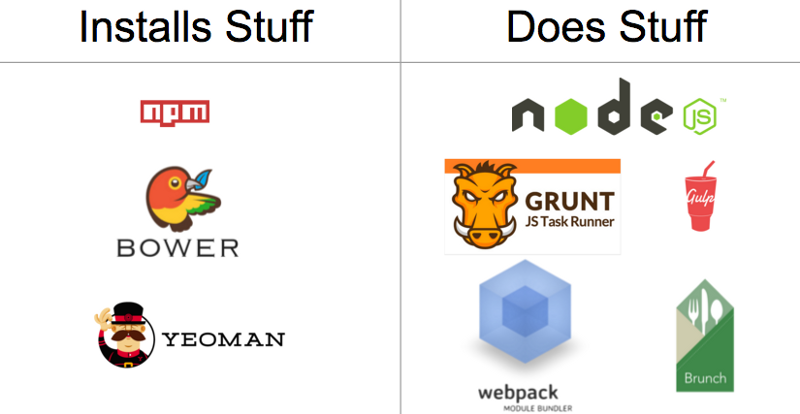Node và npm cài đặt và chạy tất cả các công cụ còn lại. Node là công cụ thực hiện ("doing") và npm là công cụ cài đặt ("installing").
+ Nodejs: Node.js là 1 nền tảng chạy trên môi trường V8 Javascript runtime. Nói nôm na đây là một chương trình để chạy các file js trên máy tính
+ npm là tool để tải các chương trình do người ta viết cho node
Ở ứng dụng demo này, chúng tôi chỉ sử dụng npm và nodejs mà không dùng bất cứ công cụ nào khác.
Giới thiệu sơ về ứng dụng:
Đây là một ứng dụng quản lý kỳ kinh của người phụ nữ, Ứng dụng có đầy đủ các chức năng như đăng nhập, đăng ký, Thêm kỳ kinh, Xóa kỳ kinh, Sửa kỳ kinh và hiển thị các kỳ kinh trên màn hình.
Các màn hình giao diện tương ứng từng chức năng như sau:
Màn hình đăng nhập:
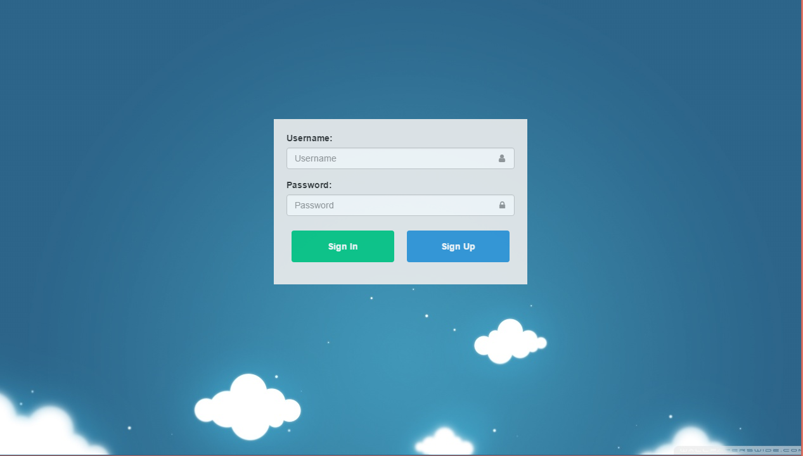Đăng ký tài khoản:
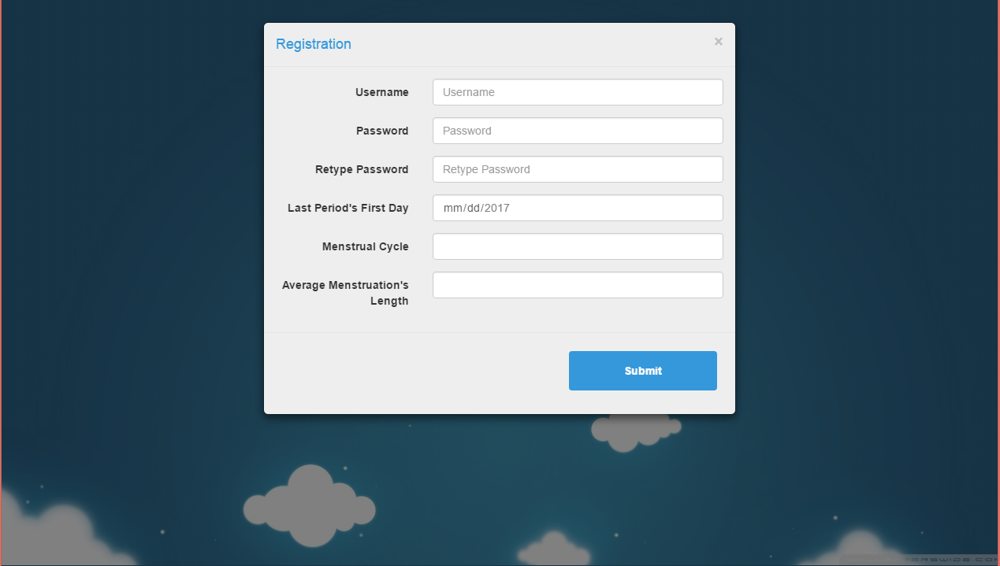Thông tin kinh nguyệt:
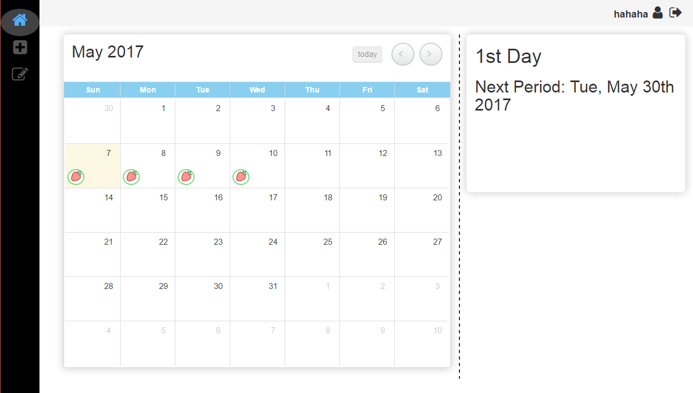Thêm kinh nguyệt:
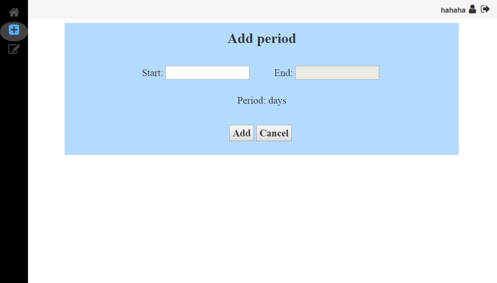Chỉnh sửa thông tin kinh nguyệt:
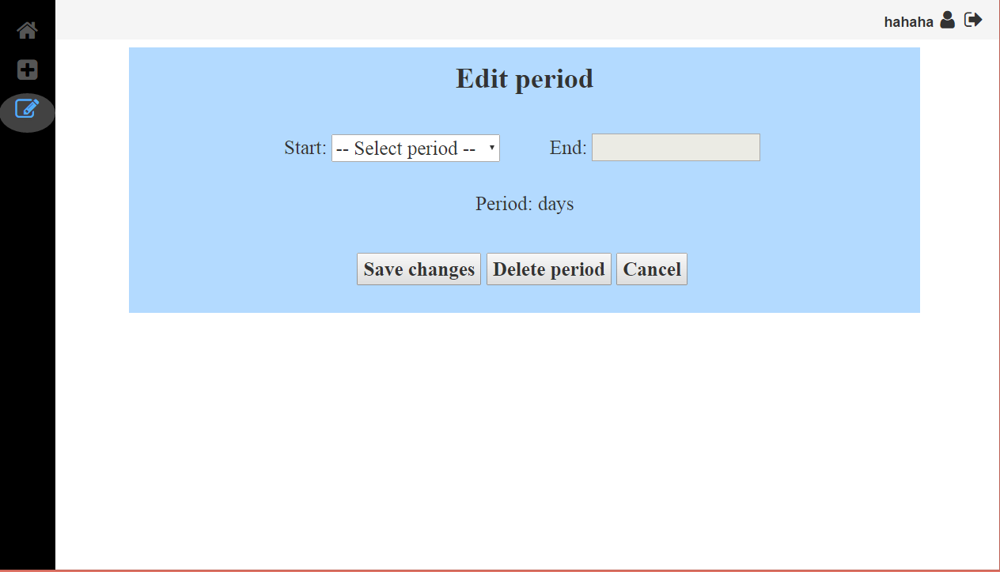Chỉnh sửa thông tin người dùng:
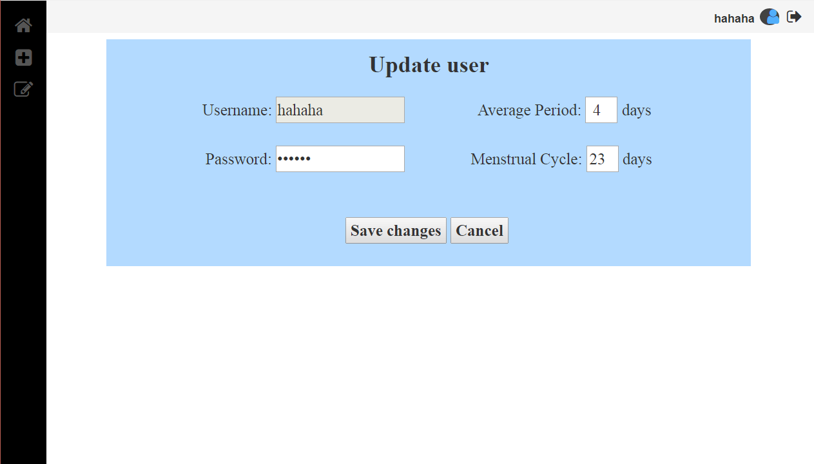Áp dụng IPC vào ứng dụng:
Đây là một ứng dụng nodejs thông thường, nên đầu tiên bạn cần khởi tạo ứng dụng dùng lệnh npm init.
Sau đó tiến hành cài electron dùng: npm install --save –dev electron
Ở file package.json, thêm dòng:
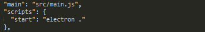Thuộc tính “main” chính là đường dẫn tới file main.js, “start” trong phần “script” có nghĩa là khi ta dùng lệnh “npm start”, nó sẽ thực thi ứng dụng electron này.
Khi này trong ta sẽ tạo 1 thư mục src ngay cùng thư mục chứa file package.json, và trong thư mục src này, ta tạo file main.js để chạy ứng dụng.
Trong file main.js, nhớ require(‘electron’) nhé, sau đó tạo một BrowserWindow như hình:
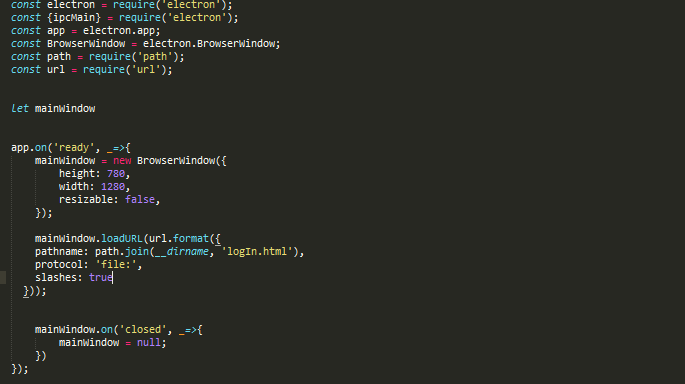Vậy là ta đã tạo được một màn hình window. Khi khởi chạy ứng dụng, ta sẽ nhận đc:
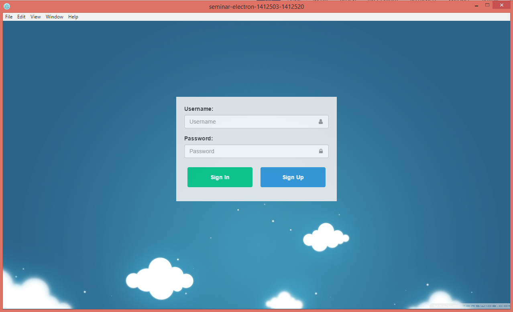Tương ứng với màn hình này là file logIn.js, renderer process:
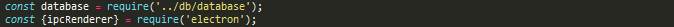Khi lấy các thông tin người dùng nhập vào và kiểm tra trong cơ sở dữ liệu, nếu người dùng có tồn tại, ta thực hiện gửi thông tin người dùng, ngược lại sẽ trả số 0 về main pocess:
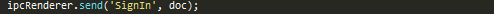Ở đây ta tạo kênh “SignIn” , doc là thông tin người dùng
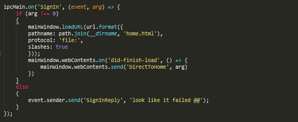Ở main.js, lắng nghe kênh “SignIn”. Window sẽ load trang “home.html” và renderer của trang này là home.js. mainWindow.webContents.on(‘did-finish-load’, function) là hàm sẽ thực thi hàm function sau ngay sau khi trang web đã được load. Khi này , hàm main sử dụng mainWindow.webContents.send tức là sẽ gửi thông điệp đến trang renderer hiện hành, đó là home.js chứ không còn là logIn.js nữa.
Như vậy, ở đây, giữa 2 renderer logIn và home không giao tiếp trực tiếp với nhau mà thông qua main.js như trên.
Tương tự như vậy, các màn hình còn lại cũng tương tác với nhau theo cách thức đó.
AppKit - Bootstrap Angular Admin Theme for Developers

Love this free documentation theme?
Check out AppKit - an Angular admin theme I created with my developer friend Tom Najdek for developers. AppKit uses modern front-end technologies and is packed with useful components and widgets to speed up your app development.
[Tip for developers]: If your project is Open Source, you can use this area to promote your other projects or hold third party adverts like Bootstrap and FontAwesome do!